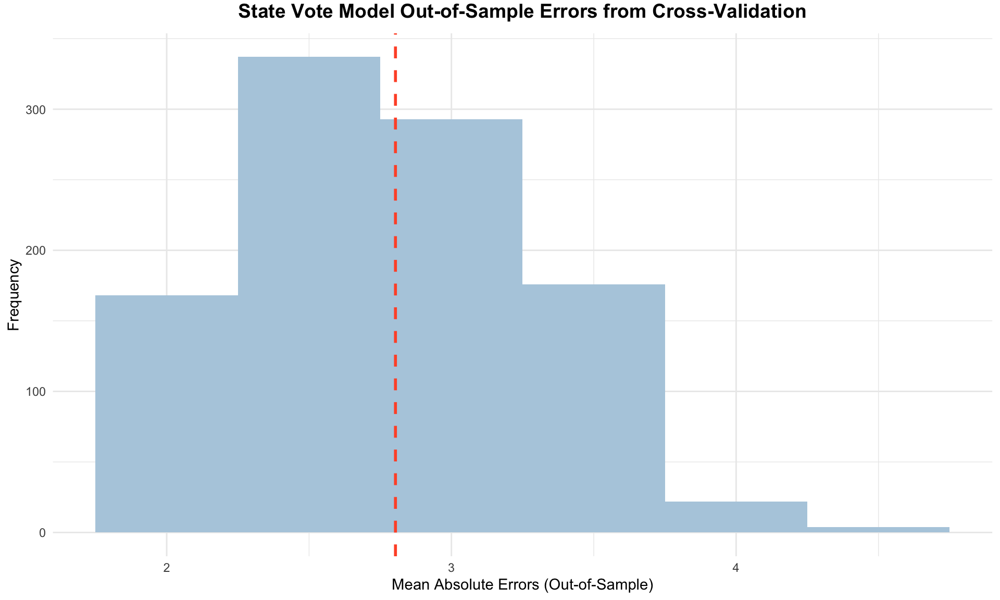

| National Popular Vote Share (Incumbent Party Candidate) | ||||
| Predictors | Estimates | std. Error | CI | p |
| (Intercept) | 21.77 | 5.19 | 9.81 – 33.74 | 0.003 |
| GDP growth quarterly | 0.50 | 0.14 | 0.18 – 0.82 | 0.007 |
| oct poll | 0.47 | 0.08 | 0.29 – 0.64 | <0.001 |
| two party percent | 0.12 | 0.06 | -0.02 – 0.26 | 0.093 |
| incumbent | 1.13 | 1.08 | -1.36 – 3.61 | 0.327 |
| Observations | 13 | |||
| R2 / R2 adjusted | 0.920 / 0.880 | |||
Forecast Summary
This week, I share the culmination of my predictive modeling efforts for the 2024 presidential election, focusing on both the national two-party popular vote and the Electoral College outcome. Leveraging multivariate OLS regression models built on a historical dataset from 1968 to 2020, I project that Vice President Kamala Harris will secure the presidency with 51.96% of the popular vote and 319 electoral votes.
Predictors:
Q2 GDP Growth: Captures recent economic performance, as voters tend to focus on the pre-election economy (Achen & Bartels, 2014).
October Polling Averages: Late polls, weighted by weeks until the election, offer better forecasts (Gelman & King, 1993).
Party Affiliation: Voter identification with major parties is a strong predictor of vote share (Kim & Zilinsky, 2024).
Incumbency: Reflects the structural advantage of sitting presidents.
Two-Party Vote Model
This model applies a multivariate OLS regression to forecast the national two-party popular vote share for the incumbent party’s candidate. The dependent variable is the percentage of the two-party vote won by the incumbent party, which is defined as the party holding the presidency during the election year. The model leverages historical data spanning from 1968 to 2016, excluding 2020 due to the anomalous economic impacts of the COVID-19 pandemic.
The selection of variables is informed by established research. Achen and Bartels’ work on economic voting underpins the inclusion of Q2 GDP growth, emphasizing voters’ short-term focus on economic conditions. Gelman and King’s analysis of polling accuracy highlights the importance of incorporating October polling data, weighted by proximity to the election, to capture late-stage voter sentiment shifts. The model also considers party affiliation strength, a significant predictor of voting behavior as identified by Kim and Zilinsky, and accounts for the inherent advantages often afforded to incumbents, as explored in electoral behavior literature.
By synthesizing these elements, the model aims to deliver a nuanced prediction of the two-party vote share, acknowledging both economic and political dynamics that influence voter decisions.
Regression
The model, based on 13 presidential elections from 1968 to 2016, excludes 2020 due to the economic impact of the COVID-19 pandemic. The regression table for the national two-party popular vote is presented below.
Coefficients
Most coefficients are significant, except for the two-party percentage and incumbency status.
Q2 GDP Growth: A 1% rise in Q2 GDP growth leads to a 0.50% increase in the incumbent’s vote share (p = 0.007), indicating a positive relationship.
October Polling Averages: A 1% increase in October polls corresponds to a 0.47% rise in the incumbent’s vote share (p < 0.001), making it a strong predictor.
Two-Party Percentage: A 1% rise adds 0.12% to the vote share, though not statistically significant (p = 0.093).
Incumbent Status: Incumbency contributes a 1.13% increase in vote share, though not significant (p = 0.327).
Despite their insignificance, two-party percentage and incumbency help prevent omitted variable bias, enhancing the model’s robustness.
Model Validation
The model explains 92% of the vote share variation (R-squared = 0.92), with an adjusted R-squared of 0.88, indicating minimal overfitting. Cross-validation, with 1,000 iterations, yielded a mean absolute residual of 3.63, demonstrating strong predictive accuracy, as the national vote share typically varies by nearly 20 points. The accompanying histogram illustrates the distribution of these prediction errors, highlighting the model’s reliability.
The error distribution leans slightly to the right, suggesting that the model sometimes underpredicts the incumbent candidate’s performance more significantly than it overpredicts. The histogram highlights a few outliers with mean absolute errors exceeding 5, indicating instances where the model significantly underestimated the incumbent’s vote share.
This rightward skew isn’t inherently problematic. Election outcomes can be unpredictable, and certain conditions may lead to the incumbent surpassing expectations in some years. Overall, the model shows strong performance, with these assessments reinforcing its reliability in forecasting electoral results.

Predictions for 2024
| Prediction Value | Lower Bound | Upper Bound |
|---|---|---|
| 51.96 | 47.46 | 56.47 |
The national model forecasts Vice President Harris securing 51.96% of the two-party popular vote, leaving former President Trump with 48.04%.
The 95% confidence interval provides a range: at the lower bound, Trump is projected to win 52.54%, with Harris at 47.46%. At the upper bound, Harris could achieve 56.47%, while Trump would receive 43.53%.
The accompanying visualization summarizes these predictions, with the dashed line marking the 50% threshold of the national two-party popular vote.

State-Level Popular Vote & Electoral College Model
Building on the national model approach, a multivariate OLS regression was developed to predict outcomes in 13 key states, shaping the Electoral College forecast.
The dependent variable in this state model is the Democratic candidate’s share of the state-level two-party vote (%). Key predictors include:
Lagged Democratic Vote Share: Two-party vote share from the previous election.
Weighted October Polling Averages: State-level polls from October, adjusted for proximity to Election Day.
Incumbent Party Status: Whether the Democratic candidate represents the incumbent party (1) or not (0).
Why
While the national model explains incumbency at the presidential level, the state model explores party-level incumbency. Historically, only a few incumbent presidents have lost re-election, but their parties have faced more frequent defeats. Additionally, the lagged vote share captures the increasing polarization in voter behavior, where past election results strongly influence future outcomes.
Model Training
The model was trained on data from 2000 to 2020, focusing on recent voter trends and methodologies. The resulting regression table is presented below.
| Democratic State-Level Popular Vote Share | ||||
| Predictors | Estimates | std. Error | CI | p |
| (Intercept) | -2.97 | 0.89 | -4.73 – -1.21 | 0.001 |
| lag vote share | 0.45 | 0.04 | 0.38 – 0.53 | <0.001 |
| oct poll | 0.67 | 0.04 | 0.59 – 0.76 | <0.001 |
| incumbent party | -0.74 | 0.44 | -1.60 – 0.12 | 0.092 |
| Observations | 295 | |||
| R2 / R2 adjusted | 0.928 / 0.927 | |||
Most coefficients, except incumbent party status, are statistically significant at the 99% confidence level.
Lagged Two-Party Vote Share: Each 1% increase in the previous election’s Democratic vote share results in a 0.45% rise in the current vote share. This is a strong and significant predictor (p < 0.001).
Weighted October Polling Averages: A 1% increase in October polling translates to a 0.67% boost in the Democratic vote share, underscoring its predictive strength (p < 0.001).
Incumbent Party Status: A marginal decrease of 0.74% in the Democratic vote share occurs with incumbent party status, though this is not statistically significant (p = 0.092).
Model Validation
The model explains 93% of the variance in state-level vote shares (R-squared = 0.93), indicating a robust fit. The adjusted R-squared remains stable at 0.927, confirming minimal overfitting.
Cross-validation, using 1,000 iterations with half the election years as test sets, yielded a mean absolute error of approximately 2.8. This demonstrates the model’s accuracy in predicting state-level vote shares, which typically range over 20 percentage points. Below is a histogram of out-of-sample errors, with the dashed line indicating the average error.

The histogram of out-of-sample errors shows a mean absolute error around 2.8, indicating the model’s generally strong predictive accuracy. Most errors fall between 2 and 4, with the distribution tapering at the edges. While the curve isn’t perfectly symmetrical, it demonstrates reliable performance, suggesting the model can predict outcomes within a narrow margin of actual results.
Swing States
The state model predicts Vice President Harris will secure the Democratic vote share in critical states like Arizona, Georgia, Michigan, and Pennsylvania, while former President Trump is expected to carry Florida and Texas. This analysis focuses on 13 pivotal states, identified by political analysts as crucial to the 2024 election outcome. These include a mix of “Lean Democrat,” “Lean Republican,” and “Toss-Up” states, emphasizing their potential to swing the election.
Many of these races are highly competitive, with prediction intervals often crossing the 50% threshold, highlighting the uncertain and tightly contested nature of the upcoming election. This is particularly evident in key battlegrounds where small shifts in voter preference could alter the outcome.
A visual representation of these predictions shows the expected Democratic vote share, with black dots marking the predicted values. Blue and red dots illustrate the upper and lower bounds of the confidence intervals, favoring Democrats and Republicans, respectively. The dashed red line at 50% serves as a benchmark, clearly showing how close many states are to tipping either way. This visualization reinforces the model’s findings, underscoring the importance of these tightly contested states in shaping the electoral landscape.
2024 Electoral College Prediction
The projection assigns the remaining states (based on our given expert forecasts), predicting Vice President Harris with 319 electoral votes and former President Trump with 219. The accompanying Electoral College map highlights Harris’s expected path to surpass the 270-vote threshold needed to win.
Final Thoughts
I’m really looking forward to seeing how the election plays out and comparing the results to my predictions. It’ll be interesting to see where the model might have been accurate and where there might be room for improvement. After the election, I’ll definitely take some time to reflect on what worked, what didn’t, and how I can tweak things for the future.


No matching items